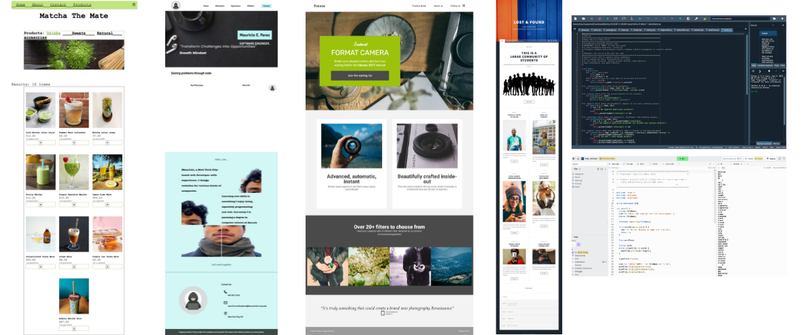

During the pandemic in 2020, I began teaching myself programming through the Codecademy platform. Starting with the basics, I gradually advanced my skills by tackling various coding challenges and interactive lessons. Over time, I gained confidence and proficiency, enabling me to design websites and develop small projects. My journey from a novice to a capable programmer highlights my dedication and the effectiveness of self-guided online education. here
I continued to expand my knowledge and skills by diving deeper into programming concepts and exploring more advanced topics. I dedicated time to learning new languages
I got into college to pursue a degree in Computer Science. Here, I explored more advanced computer languages and concepts, expanding my knowledge. These experiences pushed me to solve complex problems, collaborate with classmates, and continuously refine my coding abilities, further solidifying my passion for the field.
 929 387 2429
929 387 2429 mauricio.embusperez@baruchmail.cuny.edu
mauricio.embusperez@baruchmail.cuny.edu New York City, NY
New York City, NY